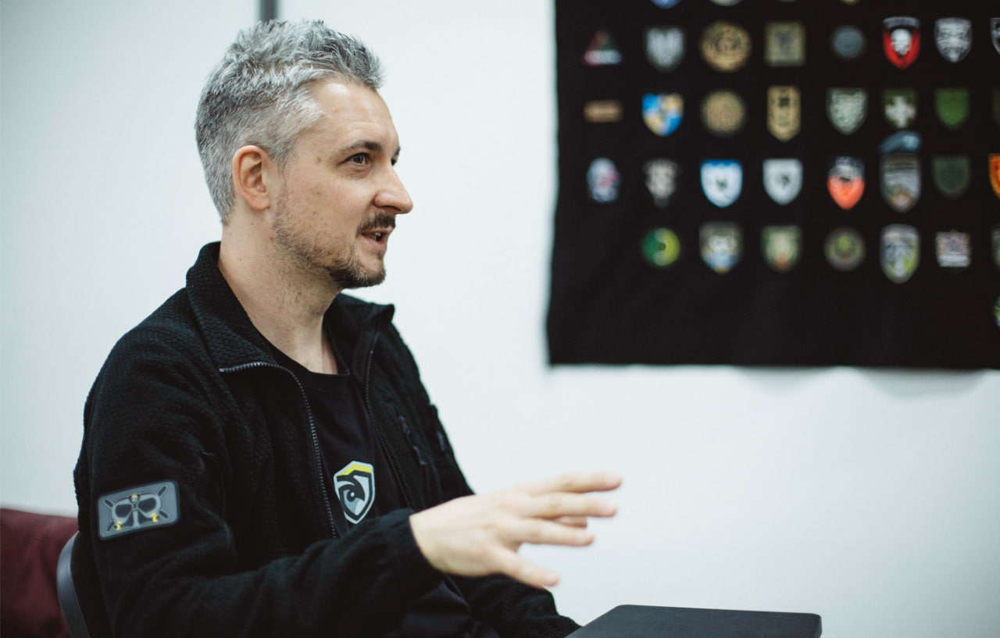

The FPV war: how the necessity of asymmetrical retaliation creates a new combat model
28.05.26
On the first day of summer, 2025, SBU (Security Service of Ukraine) used FPV-drones to hit 41 aircraft at four airfields in Russia. 117 quadrocopters damaged 34% of strategic carriers of cruise missiles, causing more than 7 billion dollars in damage.
Operation Cobweb has shown that civilian drones can change the logistics of modern warfare.
Kunsht spoke to Ivan Kovaliov, the Head of the Multirotor Combat FPV Division of the “Boryviter” military school, about the evolution of drones during the Russian-Ukrainian war and the uniqueness of Ukrainian innovations.
Flexible technology that destroys up to 80% of the enemy vehicles and infantry
Most drones came to warfare from civilian uses: agricultural drones evolved into multirotor bombers, Mavics evolved from aerophotography into reconnaissance and targeting, and FPVs created for racing became the base for suicide drones (also called loitering munitions).

Loitering munitions existed before, but FPVs opened new possibilities. Ivan explains that they have characteristics that have never been combined in a single instrument before. High-precision, maneuverable, and low-priced FPV drones can hit targets that are inaccessible to other types of weapons.
“The technology is very flexible. They can be swiftly modified for a specific task; it’s basically a building kit that adapts to battlefield changes. They can fly into a window or impact a vulnerable spot on a vehicle (like airplane fuel tanks during Operation Cobweb — edit.). FPVs offer many offbeat use cases. They allow us to retaliate against Russia asymmetrically.”

Currently, up to 80% of the enemy’s vehicles and infantry are destroyed by drones. Most of them are made in Ukraine.
The economy of war
Military unmanned aerial vehicles were used worldwide before FPVs became widespread. However, these were not loitering munitions but large reconnaissance drones and bombers, such as Bayraktar or MQ-9 Reaper, that carry missiles and bombs.

“Those are very expensive drones. A Bayraktar costs around five million dollars, a Reaper 28 million dollars. And it’s just the aircraft; missiles and bombs for it also cost exorbitantly. All the infrastructure to maintain and launch them consists of rather complex processes,” Ivan explains. In recent years, Bayraktar hasn’t been used much in the Russian-Ukrainian war, according to his observations.
Earlier, the West placed its bets on large and expensive systems. However, the Ukrainian necessity to retaliate asymmetrically against the enemy, who surpasses us in numbers of people and weaponry, created a demand for rapid mass production of low-cost drones.
Although the main function of an FPV on a battlefield is loitering munition, it can also be used for transport or additional reconnaissance: “FPVs are a flexible and widely accessible weapon that has completely changed the economy and tactics of full-scale warfare”.

Ukrainian manufacturing: rapid adaptation to the demand
During the so-called Anti-Terrorism Operation/Joint Forces Operation, and at the beginning of 2022, Mavic drones were used for reconnaissance, targeting artillery, and dropping munitions. But it wasn’t enough.
FPV drones were first used in combat in August-September 2022.
“The soldiers who were using FPVs earlier for racing and freestyle took their 5-inch drones, attached munitions to them, and impacted the enemy. Then, it became clear that FPVs were an effective and relatively cheap weapon compared to the targets it was destroying,” Ivan remembers.

At the beginning of 2023, the widespread use of FPVs had already changed warfare. Especially considering the deficit of artillery shells we had at that time.
If, three years ago, we were starting to work with the “fives”, we currently mostly use “sevens” and “tens” (in FPVs, the length of the propellers is measured in inches; it’s a primary indicator of their size). They differ by load capacity and flight distance. A seven-inch drone usually carries about a kilogram of combat load; a ten-inch drone, on average, about two kilograms. The flight distance depends on the battery and the weight of all the components.

13- and 15-inch FPVs are becoming relevant. Besides the combat load, they can carry a spool of fiber-optic cable that weighs two to three kilograms and fly much further.

At first, FPVs were constructed from Chinese components, using standard protocols and firmware. Now, the expert says, Ukraine is able to mass-produce low-cost drones from its own components, comparable to Chinese, and often of better quality. It’s the biggest difference between Ukrainian drones and all the others, including Russian ones.

“We already have enormous amounts of our own electronics. We have flight controllers, motor controllers, control receivers, and video transmitters. Half a year ago, there was one product; currently, we have a full catalog of Ukrainian products created for specific tasks”.
There are also engines manufactured in Ukraine, but they have to use Chinese neodymium magnets, because we don’t have industrial deposits of neodymium ore in Ukraine.
Ukrainian parts make manufacturers independent and the process cheaper.
“Both Europeans and Americans can make great engines, but what will be the cost? Exorbitant. And we need a drone that will cost 300 dollars, not 3,000.”

Drones are constantly modified through contact between the military and manufacturers. After modification, the drone is tested at a test site and then in combat.
“It’s impossible to create an effective drone without communicating with pilots and other engineers throughout the process,” Ivan says.

There are continuous refinements. One example occurred during the development of targeting systems. “At that time, we found out that the camera exposure can be regulated during the flight, so we can make it more or less sensitive. Usually, it’s a standard camera. It doesn’t always adapt correctly on its own. This way, when the pilot flies against the sun, they can adjust the exposure to see the target more clearly. And we started telling it to other manufacturers.”
Initiation boards are another instance of drone modification written with the blood of our crews. “Nowadays, there’s always a safety pin that is pulled out when the crew hides, and the drone flies up. The worst that can happen is the drone exploding at the position, but not near people. Unfortunately, this wasn’t a standard earlier.”

After a modified drone has been tested on the battlefield, it receives a code on the state level and becomes available for official purchase for military units through the Defense Ministry.
Ukrainian drone production today is a large network of separate small teams and companies capable of producing large quantities of drones. Ivan tells us that it’s a community of schools, crews, and manufacturers that is growing into an industry. State regulation is moderate, he says, because if you tighten the screws too much, the process will stop.
When I ask Ivan how long it takes to implement a new model, he compares Ukrainian and Western companies to give a clearer picture. The terms are incommensurable. In Ukraine, he says, the road from development and testing a prototype to use on the battlefield is extraordinarily short: “I’ve been to a couple of NATO presentations. They have a timeline of 5–7 years. We don’t have that much time. Our systems get to work in combat in seven months.”
A new security architecture is being created here and now
Things change very rapidly. Technologies are constantly updated. “Each month, something new appears. Every two to three months, new tactics are developed. Every half a year, changes happen that dramatically affect the combat strategy,” says Ivan Kovaliov. “We started from 20-km flights, now we have a record of 60 km. Later, an automatic retargeting function appeared that enabled the drones to reach faraway targets. Later, the Russians began actively using optical fiber, and we adopted their approach. It’s a constant, unending race.”

What happens now on the Ukrainian battlefield changes the overall logic of warfare: quick adaptation to changes, asymmetrical retaliation, and a realistic approach to arms.
“The NATO countries don’t have experience of defending against aggression and attacks on a large scale”, the expert explains, “when exorbitantly expensive weapons can quickly run out, and high-tech air defense will be overloaded. Here and now, it’s not just a new model of technologically asymmetrical war with non-standard tactics that’s being developed, but a new security architecture is being born. Not only in a context of large-scale warfare, but also in counterterrorism operations.”
The expertise that only we and the enemy currently have influences drone development as well. Ukrainian FPVs are produced for specific requests.

“Western drones resemble some fantastic boxes from Hollywood movies. They are trying to solve tasks that don’t need solving, and at the same time, they don’t do what they’re supposed to do. The manufacturers often attempt to make them universal: a spy, a loitering munition, and a transport vehicle in one. Usually, there’s no need for a universal system, because we need cheap, effective loitering munitions separately, and reconnaissance drones separately; these are different classes with different requirements. Sometimes, Western manufacturers try to automate processes and functions that don’t need to be automated or are too critical to rely on automation. If the lives of the soldiers depend on some action, the commander and the drone operator will take additional time to do everything manually, because it’s not a movie; lives are at stake. On the other hand, there are many functions where automation is necessary, but Western engineers don’t do it. Everything works great on paper, at a test site, but these drones won’t survive baptism by combat because they already stop working near Kyiv due to GPS jamming. There’s a chasm between us.”

Besides, Ivan says, Ukrainians count the cost of mass use from the start. The NATO countries have placed their bets on expensive high-tech machinery because they are usually focused on short-term operations. We have a full-scale invasion; here, the costs of the war economy are enormous. When we have 500 Shaheds attacking us every day, we have to place our bets on cheap technology that will outnumber them.
Our enemy is experienced. We are teaching them, and they are teaching us. We are teaching our allies, and they are teaching theirs. So, he sums up, this war is the present and the future.
Generalists
Given the rate of change, it’s important for “Boryviter” to provide FPV operators with a systemic knowledge. To teach them not just professional piloting, but engineering and technical skills, use tactics, and the capability to work under pressure and make decisions quickly.
“Basically, we are training generalists — flexible, wide-ranging experts capable of quickly adapting and learning. The core challenge is the technical background. Every operator needs to be taught a systemic understanding of engineering and the ability to work with a broad range of equipment. If a pilot doesn’t understand how these technologies work, how to use and modify them effectively and correctly, or how radio connections and antennas work, they won’t fly too far. If they don’t know what the connection frequencies are and how to change them, they won’t be able to withstand the enemy’s means of electronic warfare.”
Over the course of a month, the “Boryviter” military school teaches basic engineering skills and flight prowess. Ivan tells us that the school is attempting to teach critical skills so that later, when carrying out combat missions, the crew will be able to make quick decisions and stay in contact with their engineers, instructors from the school, and manufacturers for further modification and development of new tactics.
Our “program” today is accelerated — we go to the test site after only 2 hours of class conversation.
There is no ultimate weapon
At the test site, people gather around five tables. For four weeks, trainees listened to lectures. In parallel, they were learning on a simulator and training with drones in an enclosed space. After meeting rigorous requirements and proving their qualifications, future pilots and navigators move on to open-space practise. The instructors show them how to pilot 7- and 10-inch FPVs.

“We are teaching them precise microcontrol and navigation. Right now, it’s especially relevant”, Ivan says, leading us from table to table. “Besides learning to hit targets outdoors, we have an exercise on neutralization of targets hidden among the trees. It’s been a long time since there were any targets that were waiting in an open field to be hit. The enemy's vehicles and troops are hiding. The pilot has to detect them, find the right trajectory, and fly in.”

A bit further, the field is covered with thin webs of optical fiber, not cleaned up yet after the previous group's training.
“Thanks to the optical fiber connection, a drone can fly into a thick forest, find a target there, and either destroy it or provide targeting for heavy bombers. Due to limitations of radio connection and maneuverability, other reconnaissance methods wouldn’t be able to do it,” Ivan explains, holding the barely visible glassy thread.

But it’s important to understand that optical fiber doesn’t supplant radio communication, and automatic targeting systems don’t supplant pilots. These are auxiliary technologies that work in a system.
The field of interceptor drones is also moving toward simplification and automation. This may allow for lowering the qualification demands of operators and efficiently upscaling the number of interceptor crews. But there are still fields that will require highly trained people.
Ivan reluctantly talks about technologies that will have a meaningful impact on the battlefield, because, as he reminds us, everything changes dramatically every half a year. However, he names a couple of the most promising ones for the coming months:
improvements of automatic targeting and machine “vision” for interceptors of airborne targets;
lowering the cost of interceptors;
evolution of autonomy and non-GPS navigation to improve the fire density;
developing our own digital protocols of video-communication and interference-resistant communication, LTE and Mesh systems, and retranslation systems;
development of electronic reconnaissance and drone detection systems, radars, and new types of countermeasures and attacks.
“The main thing to understand here,” Ivan says in conclusion, “is that there is no ultimate weapon, able to change everything and win the war on its own. There is no technology that can’t be counteracted, and there’s no counteraction that can’t be circumvented. It’s an endless race.”
The reportage is published with the support of the Alfred P. Sloan Foundation.